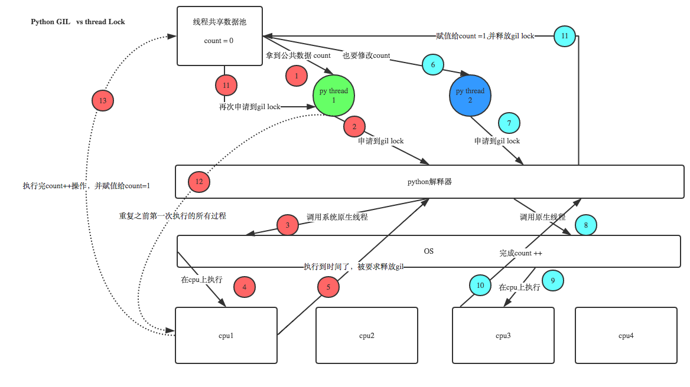

python进阶07并发之三其他问题
何时使用多进程(线程)
使用多进程or线程,对于python，考虑到GIL锁，基本上默认使用多进程就对了。
除此之外，线程共享全局变量，进程全局变量则是隔离的，实际进程大多数情况需要通信的，所以也需要考虑共享数据读写问题处理。 决定因素稳定性和数据共享要求上（操作系统差异性，win偏好线程，linux偏好进程）
性能上虽然线程较好，但实际除了大型互联网公司和部分专业性质软件，大多数中小型公司的并发量，并不会带来很大影响，况且目前服务器领域，基本上LInux和Unix占比较高，线程相比进程在性能上优势并不十分突出。所以这方面考量不会太大的。
以下几种情况可考虑多进程(线程)
循环（互相独立，无内部依赖）
耗时操作，批量下载IO等操作，典型的是网络爬虫
分叉型计算，典型的是分治算法，或mapreduce的map阶段
python多线程既然有GIL锁为何还需要加锁
Python已经有一个GIL来保证同一时间只能有一个线程来执行了，为什么这里还需要lock? 注意啦，这里的lock是用户级的lock,跟那个GIL没关系 ，具体我们通过下图来看一下

简单来说就是，“GIL同一时间只有一个线程执行”是微观层面锁，但我们需要加锁的是宏观层面锁。
比如 锁(process_a1,process_a2,process_a3),和 锁(process_b1,process_b2,process_b3)，如果去掉锁，仅仅依赖GIL的机制,则可能出现：process_a1,process_b1,process_a2.process_b2,process_a3,process_b3，可能导致错误数据出现.
相比之下，协程里的多线程(的共享数据访问)则是不需要加锁的！因为从用户层面看，协程是多线程的。但虚拟机层面，其实单线程的，协程内部进行cpu执行权利的自行控制。关于单线程实现多线程并发执行，可参考 博文"并发之一基本概念的事件模型部分"。
同进程不同线程可运行在不同核心上？
这个还要看编程语言的线程模型。某些语言（如python）的线程模型不支持并行运行在多个核上
实际上有些操作系统在内部并不分进程和线程，调度方式是一致的。比如Linux，共享内存的就是线程，不共享内存的就是进程，然后把包装好的创建函数暴露给POSIX API。
现在同一进程下的多个线程是可以在多核CPU下并行运行的。但2.4内核及以前的系统实现的线程没有内核支持，无法在多核的情况下并行运行。
多线程的概念主要有两种：一种是用户态多线程；一种是内核态多线程
内核态多线程，如楼上所言，在操作系统内核的支持下可以在多核下并行运行；
对于用户态多线程，尽管没有内核的直接支持，但若一个用户态线程对应于内核的一个进程的话（从这个角度，内核还是间接支持的），仍然是可以在多核上并行运行的。
因此，这归结为，用户态多线程的实现技术。
似乎目前Linux上的用户态多线程，就是利用了内核的进程来实现的。
如果是内核线程（就是fork出来的，pthread_create在2.4后最终也用fork，具体参看其实现），那么可以调度到多cpu，内核支持线程的诱导因素之一就是可以利用多cpu资源进行并行计算；如果是用户线程，那么就不能在多cpu上并行计算了，用户库线程的弊端之一就是不能利用多cpu资源；
线程是并发还是并行，进程是并发还是并行？
线程是并发，进程是并行；
现代os都将线程作为最小调度单位，进程作为资源分配的最小单位。
父子进程如何区分?
子进程是父进程通过fork()产生出来的，pid = os.fork()
通过返回值pid是否为0，判断是否为子进程，如果是0，则表示是子进程
由于 fork() 是 Linux 上的概念，所以如果要跨平台，最好还是使用 subprocess 模块来创建子进程。
子进程如何回收？
python中采用os.wait()方法用来回收子进程占用的资源
pid, result = os.wait() # 回收子进程资源 阻塞，等待子进程执行完成回收
如果有子进程没有被回收的，但是父进程已经死掉了，这个子进程就是僵尸进程。孤儿进程,父类进程over.,子进程未结束
使用多处理池的apply_async方法时，谁运行回调
回调在主进程中处理，但单独线程(循环方式依次处理)
参考：使用多处理池的apply_async方法时，谁运行回调？